marlin allows users to set the spatial area of their simulation through a combination of the number of patches and the area of those patches. So, in theory, the entire Pacific ocean could be modeled as a two-by-two system with a massive patch area parameter. However, this prevents the user from modeling finer-scale habitat features, or of course of modeling MPA networks at finer resolutions. One solution then would be to run a massive simulation with a huge number of patches and a smaller patch area. This however introduces a massive computational bottleneck, both in storing the results and in processing the movement transition matrices.
We present three potential strategies for dealing with large spatial scales in marlin below.
Steepness = 1
The steepness paramter h of the Beverton-Holt spawner-recruit relationship sets how sensitive the number of recruits is to the amount of spawning biomass. When h = 1, the number of recruits is independent of the spawning biomass.
This can be a useful trick for simulation a scenario where post-recruit movement is relatively limited, but the population is sustained by high levels of larval influx from a much larger population, without actually having to model the dynamics of that much larger population.
For example, consider the case of a lobster fishery surrounding a medium sized island that is part of a large marine ecosystem. Lobsters have relatively low post-recruit movement rates, meaning that once they settle they don’t tend to move far in the grand scheme of things. But, their larvae can travel massive distances, often staying in the water column for over half a year before settling. So, one could imagine a scenario where we used marlin to simulate the post-recruit population around this island, but set h=1 to simulate a scenario where no matter how hard the post-recruit lobsters are fished around this island a new crop of recruits will arrive from somewhere else. This is akin to simulating a system that is closed to emigration and immigration of post-recruits but open to influx of recruits from elsewhere (and assumes that the spawning biomass around the island itself is trivial compared to the overall population pool).
Sparsity of movement matrix
Movement is one of the main computational bottlenecks in marlin.
marlin uses a continuous time markov chain (CTMC) movement
model (link to article xx), rather than say a simple diffusion
coefficient. This is what allows marlin to simulate movement as a
complex mix of diffusion and active movement towards attractive habitat
with biologically meaningful parameters.
However, the CTMC model comes at a cost. It requires calculating and using a transition matrix from every patch to every other patch. This means that if you wanted to run a 100x100 resolution model, you have 10,000 patches, so the model needs to keep track of a 10,000 by 10,000 transition matrix, or 100,000,000 cells. This gets computationally intractable very quickly (or at least slows the model to a crawl).
One solution to this is to take advantage of the fact that
marlin uses a sparse matrix format for the CTMC
calculations. Consider a 100x100 system with a relatively large patch
area. If the movement rate of a given animal is relatively small
relative to the spatial domain, then the movement rate from one patch to
most other patches will be effectively zero. In other words, if we’re
talking about a seascape of thousands of KM across, if a tuna starts in
the bottom left corner, it has effectively zero probability of moving to
anything the the few patches nearest the bottom left corner in a single
time step of say 1 month. A reef fish would basically stay put.
This means that even though in theory you have a 100,000,000 cell
matrix to deal with in movement, the vast majority of entries in this
matrix are zero. marlin takes advantage of this to store
and deal with the matrix, allowing the model to actually run very
quickly and with low memory usage.
So, one solution to modeling a very large area is set the spatial extent, patch area, and time step such that the movement matrix itself is relatively sparse. This may still create large storage and processing costs (tracking all the outputs in every patch in every time step), but the movement calculations may still me tractable.
However, this requires the movement rate of all simulated animals to be relatively small compared to the spatial extent. If the movement rate is high relative to the spatial extent, then the sparsity of the matrix will decrease until it approaches a full matrix with all the associated computational bottlenecks.
The key dimensionless quantity that governs sparsity is the ratio of
adult_home_range to the patch width
(sqrt(patch_area)). When this ratio is small — say a reef
fish with a 2 km home range on a grid with 10 km patch widths — the
transition matrix is extremely sparse because almost all transition
probabilities are effectively zero. When the ratio is large — a highly
migratory tuna on the same grid — the matrix fills in and the
computational advantages of sparsity disappear.
To demonstrate this, we build CTMC transition matrices across a range of home ranges and patch areas on a 50x50 grid (2,500 patches), then examine how the density of the resulting transition matrices changes.
library(Matrix)
library(expm)
library(knitr)
resolution_sp <- c(50, 50)
P_sp <- prod(resolution_sp)
water_mask <- rep(TRUE, P_sp)
adj <- find_neighbors(resolution = resolution_sp, water_mask = water_mask)
# Three home ranges spanning reef fish to pelagic migrant
home_ranges <- c(2, 10, 50, 200)
# Three patch areas spanning fine to coarse grids
patch_areas <- c(4, 25, 100) # patch widths of 2, 5, and 10 km
results <- expand_grid(
home_range_km = home_ranges,
patch_area_km2 = patch_areas
) |>
mutate(
patch_side_km = sqrt(patch_area_km2),
hr_over_patchside = home_range_km / patch_side_km
)For each scenario we use tune_diffusion to convert the
home range to a diffusion coefficient, build the CTMC generator matrix,
exponentiate it to get the transition matrix, and then apply
sparsify_transition (which drops entries contributing less
than 0.1% of total probability mass). We record the number of nonzero
entries, the matrix density, and the object size in memory.
results$nnz_transition <- NA_integer_
results$density_pct <- NA_real_
results$median_nnz_per_col <- NA_real_
results$obj_size_sparse_MB <- NA_real_
results$obj_size_dense_MB <- NA_real_
for (i in seq_len(nrow(results))) {
hr <- results$home_range_km[i]
pa <- results$patch_area_km2[i]
dd <- sqrt(pa)
D <- tune_diffusion(hr)
# Build generator and exponentiate
M <- adj * D * (1 / dd^2)
diag(M) <- -Matrix::colSums(M)
T_dense <- as.matrix(expm(as.matrix(M)))
T_sparse <- sparsify_transition(T_dense, retain = 0.999)
results$nnz_transition[i] <- nnzero(T_sparse)
results$density_pct[i] <- 100 * nnzero(T_sparse) / P_sp^2
results$median_nnz_per_col[i] <- median(diff(T_sparse@p))
results$obj_size_sparse_MB[i] <- as.numeric(object.size(T_sparse)) / 1e6
results$obj_size_dense_MB[i] <- as.numeric(object.size(T_dense)) / 1e6
}The most intuitive way to see this is to visualize the transition probabilities from a single patch in the center of the grid. With a small home range, probability mass is tightly concentrated around the origin. As home range increases, probability spreads across the entire grid.
resolution_vis <- c(20, 20)
P_vis <- prod(resolution_vis)
adj_vis <- find_neighbors(resolution = resolution_vis,
water_mask = rep(TRUE, P_vis))
center_patch <- which(
rep(1:resolution_vis[1], each = resolution_vis[2]) == 10 &
rep(1:resolution_vis[2], times = resolution_vis[1]) == 10
)
vis_hrs <- c(2, 20, 100)
vis_pa <- 25
vis_dd <- sqrt(vis_pa)
vis_data <- purrr::map_dfr(vis_hrs, function(hr) {
D <- tune_diffusion(hr)
M_vis <- adj_vis * D * (1 / vis_dd^2)
diag(M_vis) <- -Matrix::colSums(M_vis)
T_vis <- sparsify_transition(as.matrix(expm(as.matrix(M_vis))))
expand_grid(x = 1:resolution_vis[1], y = 1:resolution_vis[2]) |>
mutate(
patch = row_number(),
prob = as.numeric(T_vis[, center_patch]),
home_range = hr
)
})
vis_data |>
mutate(label = paste0("home_range = ", home_range, " km")) |>
mutate(label = fct_relevel(label, "home_range = 2 km", "home_range = 20 km")) |>
ggplot(aes(x = x, y = y, fill = prob)) +
geom_tile() +
scale_fill_viridis_c("P(transition)", limits = c(0, NA), trans = "sqrt") +
coord_fixed() +
facet_wrap(~ label) +
labs(
title = "Transition probabilities from center patch",
subtitle = "20×20 grid, patch_area = 25 km², sqrt color scale",
x = "x", y = "y"
) +
theme_minimal()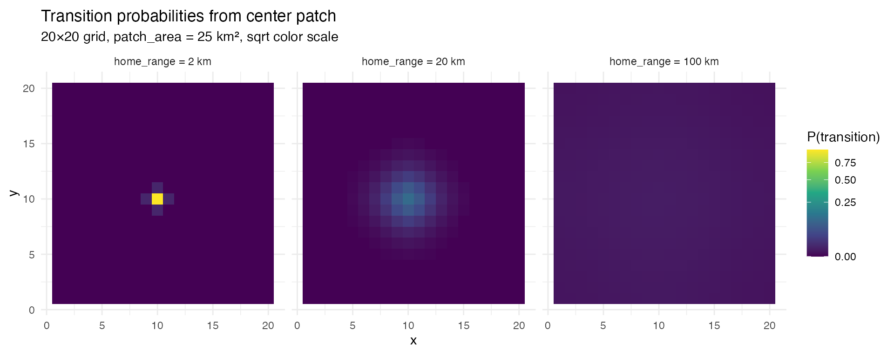
Transition probabilities from a center patch on a 20x20 grid. With a 2 km home range, almost all probability stays in the immediate neighborhood. At 100 km, probability is spread across the entire domain.
Now we can look at the quantitative relationship between home range,
patch area, and matrix density. The critical insight is that when we
plot density against the dimensionless ratio
home_range / sqrt(patch_area), the results from different
patch areas collapse onto a single curve. This ratio — the number of
patch-widths the home range spans — is the quantity that determines
sparsity.
results |>
mutate(patch_area_label = paste0(patch_area_km2, " km²")) |>
ggplot(aes(x = hr_over_patchside, y = density_pct,
color = patch_area_label, shape = patch_area_label)) +
geom_line(linewidth = 0.8) +
geom_point(size = 2.5) +
scale_x_log10() +
labs(
x = "home_range / √(patch_area) [# of patch widths]",
y = "Transition matrix density (%)",
color = "patch_area",
shape = "patch_area",
title = "Sparsity is governed by the ratio of home range to patch width"
) +
theme_minimal()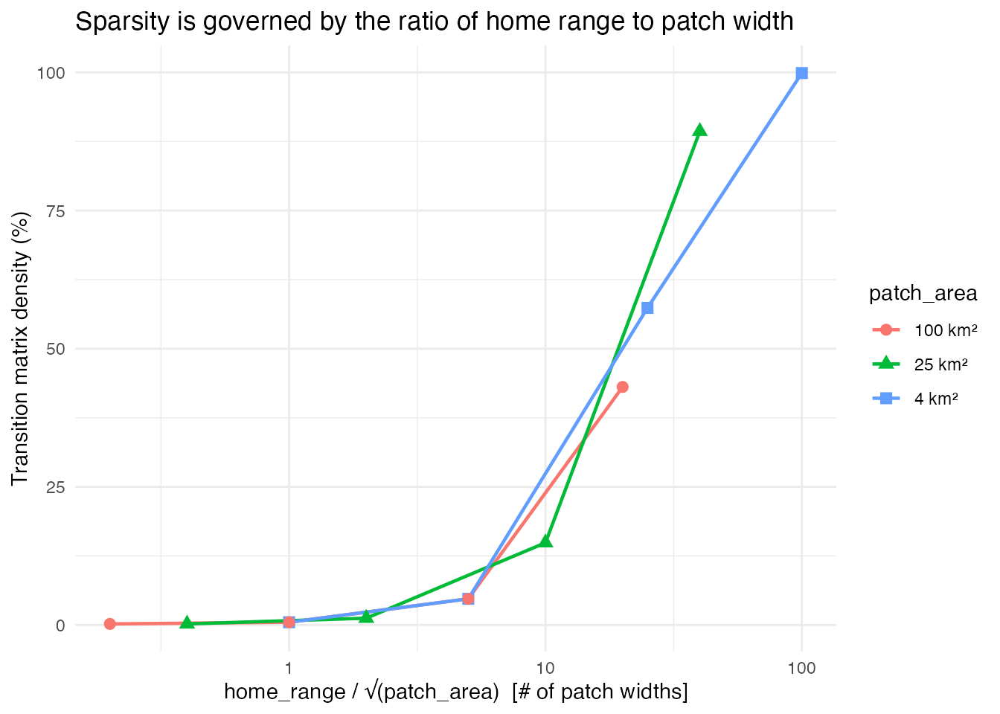
Matrix density as a function of home_range / sqrt(patch_area). All three patch area series collapse onto the same curve, confirming that this ratio is the fundamental quantity controlling sparsity.
The practical payoff of sparsity is memory. A dense 2,500 × 2,500 transition matrix is always ~47 MB regardless of the species. With sparsification, a low-mobility species needs only a fraction of a megabyte. The savings are dramatic when the home range is small relative to the patch width, and disappear as the ratio grows.
results |>
select(home_range_km, patch_area_km2, hr_over_patchside,
obj_size_sparse_MB, obj_size_dense_MB) |>
pivot_longer(cols = starts_with("obj_size"),
names_to = "storage", values_to = "MB") |>
mutate(
storage = ifelse(grepl("sparse", storage), "Sparse", "Dense"),
patch_area_label = paste0("patch_area = ", patch_area_km2, " km²")
) |>
ggplot(aes(x = hr_over_patchside, y = MB,
color = storage, linetype = storage)) +
geom_line(linewidth = 0.8) +
geom_point(size = 2) +
facet_wrap(~ patch_area_label) +
scale_x_log10() +
scale_y_log10() +
labs(
x = "home_range / √(patch_area)",
y = "Object size (MB, log scale)",
color = NULL, linetype = NULL,
title = "Memory savings from sparse transition matrices"
) +
theme_minimal()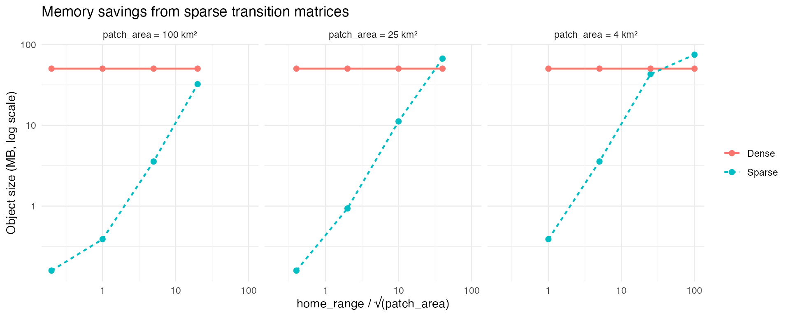
Memory footprint of sparse vs dense transition matrices. For low-mobility species the sparse representation is orders of magnitude smaller.
These results are from a 50×50 grid, but the per-column nonzero count (i.e. the number of patches each patch can reach in one time step) depends on the home range to patch width ratio, not on the total grid size. We can use this to extrapolate what a 100×100 grid (10,000 patches) would look like. A dense 10,000 × 10,000 matrix requires 800 MB. Whether the sparse version is tractable depends entirely on the species in question.
P_100 <- 10000
extrap <- results |>
mutate(
est_nnz_100 = pmin(median_nnz_per_col * P_100, P_100^2),
est_density_pct = 100 * est_nnz_100 / P_100^2,
est_sparse_MB = round((est_nnz_100 * 12) / 1e6, 1)
) |>
arrange(patch_area_km2, home_range_km) |>
transmute(
`Home range (km)` = home_range_km,
`Patch area (km²)` = patch_area_km2,
`HR / √PA` = round(hr_over_patchside, 1),
`Est. density (%)` = round(est_density_pct, 3),
`Est. sparse size (MB)` = est_sparse_MB,
`Dense size (MB)` = 800
)
knitr::kable(
extrap,
caption = "Estimated transition matrix properties at 100×100 resolution, extrapolated from 50×50 results. Dense storage is always 800 MB."
)| Home range (km) | Patch area (km²) | HR / √PA | Est. density (%) | Est. sparse size (MB) | Dense size (MB) |
|---|---|---|---|---|---|
| 2 | 4 | 1.0 | 0.13 | 1.6 | 800 |
| 10 | 4 | 5.0 | 1.35 | 16.2 | 800 |
| 50 | 4 | 25.0 | 13.86 | 166.3 | 800 |
| 200 | 4 | 100.0 | 24.97 | 299.6 | 800 |
| 2 | 25 | 0.4 | 0.05 | 0.6 | 800 |
| 10 | 25 | 2.0 | 0.33 | 4.0 | 800 |
| 50 | 25 | 10.0 | 3.86 | 46.3 | 800 |
| 200 | 25 | 40.0 | 22.46 | 269.5 | 800 |
| 2 | 100 | 0.2 | 0.05 | 0.6 | 800 |
| 10 | 100 | 1.0 | 0.13 | 1.6 | 800 |
| 50 | 100 | 5.0 | 1.35 | 16.2 | 800 |
| 200 | 100 | 20.0 | 10.33 | 124.0 | 800 |
The takeaway for practical use is straightforward: if the species you
are modeling has a home range that spans fewer than ~5 patch widths, the
sparse transition matrix will be a small fraction of the dense size and
marlin will run efficiently even at high resolution. If the
home range spans 20+ patch widths, the matrix approaches full density
and you may need to either increase patch area, reduce resolution, or
accept longer run times.
Flexible Patch Area - Island Chain and High Seas Moat
One new feature of marlin is allowing for a flexible
patch_area() parameter, in which users can supply a single
value (if all grid cells are the same size), or a matrix or vector of
values denoting different grid cell areas. This is particularly useful
for modeling species with large habitat ranges with a particular focus
on a small subset of the total modeled area.
Setting steepness,h, to 1 can approximate a system with external inputs of recruits, but assumes no immigration or emmigration of post-recruits. The flexible patch area approach can be used to allow for this type of open system without having to model the entire system.
Suppose you wanted to simulate an large island ecosystem and its associated tunas and tuna fisheries. These tunas hang out around the island some, but move on from the area, and new tunas arrive from elsewhere; the island is part of a bigger ecosystem.
To approximate this, we can create a “moat” around the core area. The core island area will have a relatively small patch size, but this moat around the border will have a massive patch size. Effectively, this moat will act as the reservoir of the larger tuna population the the island interacts with. The movement and recruitment dynamics keep track of all the implications of these different patch areas.
Consider a Pacific island chain whose waters support a bigeye tuna population that is connected to a much larger oceanic stock. Tuna move between island and oceanic waters, and two distinct fleets operate in the system: a domestic island fleet restricted to the waters around the island chain, and a distant-water high seas fleet operating in the surrounding ocean.
We model this by constructing a one-patch-wide “moat” around the perimeter of our 20x20 grid. The moat patches have 10 times the area of the interior patches, representing the vast expanse of open ocean surrounding a comparatively small island domain. The interior 18x18 grid represents the island chain’s waters at finer spatial resolution. Most of the catch of the population comes from the “high seas” fleet.
resolution <- c(20, 20)
years <- 25
# Define patch areas: interior = 100 sq km, moat = 1000 sq km (10x larger)
interior_area <- 100
moat_area <- interior_area * 10
patch_area_moat <- matrix(interior_area, nrow = resolution[2], ncol = resolution[1])
# Set the 1-patch-wide border to moat area
patch_area_moat[1, ] <- moat_area # y = 1 (bottom)
patch_area_moat[resolution[2], ] <- moat_area # y = 20 (top)
patch_area_moat[, 1] <- moat_area # x = 1 (left)
patch_area_moat[, resolution[1]] <- moat_area # x = 20 (right)
plot(patch_area_moat, main = "Patch area (sq km)", xlab = "x", ylab = "y")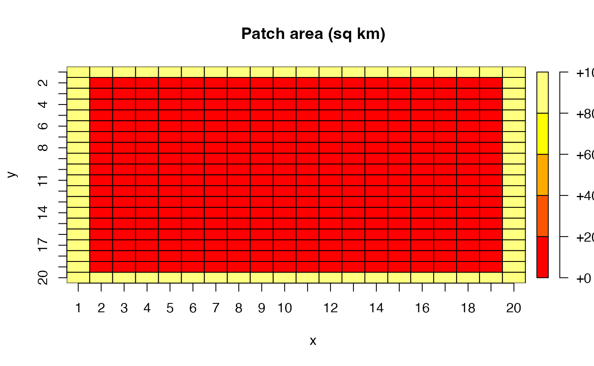
The outer moat patches each represent 1,000 sq km of ocean, while the interior patches each represent 100 sq km. This means the total area of the moat — just 76 patches — is actually 7.6^{4} sq km, comparable to the 3.24^{4} sq km of the 324 interior patches. This captures the idea that the island chain occupies a relatively small footprint within a much larger oceanic domain.
Now we build a patches dataframe that keeps track of which zone each patch belongs to, and construct separate fishing grounds for each fleet.
patches <- expand_grid(x = 1:resolution[1], y = 1:resolution[2]) |>
mutate(
patch_id = row_number(),
is_moat = x == 1 | x == resolution[1] | y == 1 | y == resolution[2]
)
# High seas fleet: can only fish in moat patches
high_seas_grounds <- patches |>
transmute(x, y, fishing_ground = is_moat)
# Island fleet: can only fish in interior patches
island_grounds <- patches |>
transmute(x, y, fishing_ground = !is_moat)
bind_rows(
high_seas_grounds |> mutate(fleet = "High seas"),
island_grounds |> mutate(fleet = "Island")
) |>
ggplot(aes(x, y, fill = fishing_ground)) +
geom_tile() +
facet_wrap(~fleet) +
scale_fill_manual(values = c("TRUE" = "steelblue", "FALSE" = "grey90"),
labels = c("TRUE" = "Open", "FALSE" = "Closed")) +
coord_equal() +
theme_minimal() +
labs(fill = "Fishing\nground")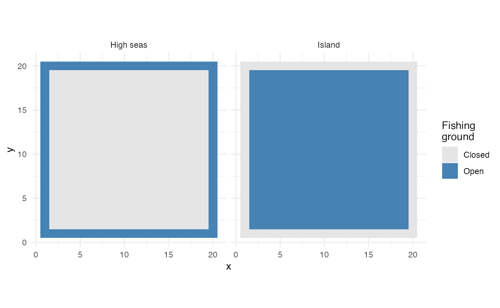
Fishing grounds for the high seas fleet (left) and island fleet (right)
We generate spatially correlated habitat for both adults and recruits. Habitat quality varies smoothly across the entire domain — the moat and interior share a single continuous habitat surface, since the tuna population spans both zones.
recruit_habitat <- sim_habitat(
"bigeye", kp = 0.01, resolution = resolution,
patch_area = mean(patch_area_moat), output = "list"
)
adult_habitat <- sim_habitat(
"bigeye", kp = 0.01, resolution = resolution,
patch_area = mean(patch_area_moat), output = "list"
)Create the bigeye tuna population. The key parameters here are
fished_depletion = 0.4 (the target equilibrium SSB/SSB0
that tune_fleets will calibrate to), and a moderate
adult_home_range of 100 km — enough for tuna to move
between interior and moat patches over time, linking the two zones
biologically.
fauna <- list(
"bigeye" = create_critter(
common_name = "bigeye tuna",
adult_home_range = 100,
recruit_home_range = 4,
habitat = adult_habitat$critter_distributions$bigeye,
recruit_habitat = recruit_habitat$critter_distributions$bigeye,
density_dependence = "local_habitat",
resolution = resolution,
patch_area = patch_area_moat,
steepness = 0.9,
ssb0 = 1000,
fished_depletion = 0.4
)
)
fauna$bigeye$plot_movement()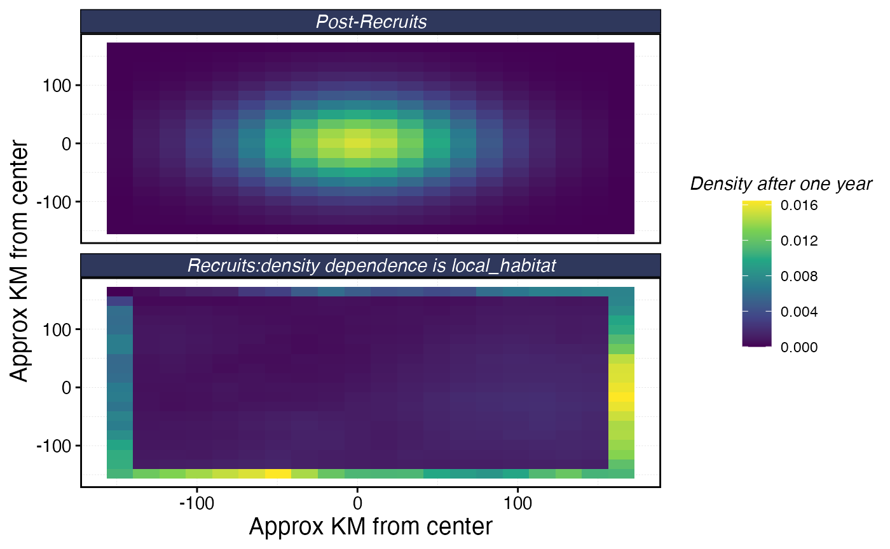
Now we set up two fleets. Both operate under constant effort and use
marginal_profit spatial allocation, which distributes
effort based on the marginal return of adding effort to each patch.
The island fleet has two port locations within the interior and a
travel_fraction of 0.3, meaning 30% of its operating costs
come from travel. This will pull effort toward ports, creating spatial
heterogeneity in fishing pressure within the island zone. The high seas
fleet has no ports and no travel costs, it is simply an external source
of fishing mortality.
# Island ports
ports <- data.frame(x = c(8, 14), y = c(8, 14))
fleets <- list(
"high_seas" = create_fleet(
list("bigeye" = Metier$new(
critter = fauna$bigeye,
price = 10,
sel_form = "logistic",
sel_start = 1,
sel_delta = 0.01,
catchability = 0,
p_explt = 10
)),
base_effort = prod(resolution),
resolution = resolution,
patch_area = patch_area_moat,
fleet_model = "constant_effort",
spatial_allocation = "marginal_profit",
fishing_grounds = high_seas_grounds,
cr_ratio = 0.9
),
"island" = create_fleet(
list("bigeye" = Metier$new(
critter = fauna$bigeye,
price = 10,
sel_form = "logistic",
sel_start = 1,
sel_delta = 0.01,
catchability = 0,
p_explt = 1
)),
base_effort = prod(resolution),
resolution = resolution,
patch_area = patch_area_moat,
fleet_model = "constant_effort",
spatial_allocation = "marginal_profit",
fishing_grounds = island_grounds,
ports = ports,
travel_fraction = 0.3,
cr_ratio = 0.9
)
)
fleets <- tune_fleets(fauna, fleets, tune_type = "depletion")With the fleets tuned, we run the simulation forward for 25 years.
moat_sim <- simmar(
fauna = fauna,
fleets = fleets,
years = years
)
proc_moat <- process_marlin(moat_sim)First, let’s look at the SSB trajectory over time to confirm the population reaches a stable equilibrium under fishing.
plot_marlin(proc_moat, plot_var = "ssb")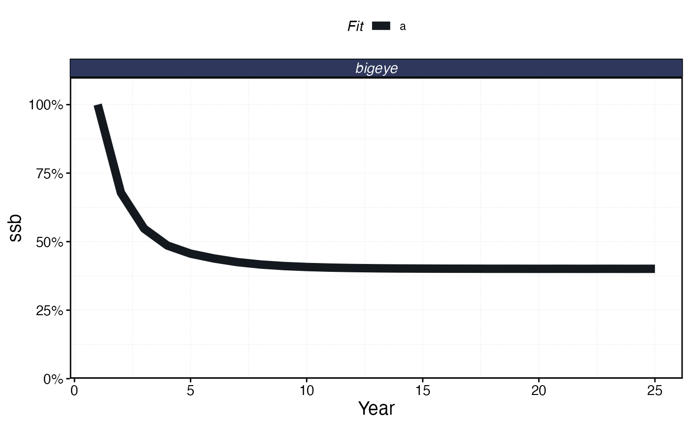
Total SSB over time under the island chain / high seas scenario
Now examine the spatial distribution of SSB and catch at the end of the simulation. Because the moat patches have 10x the area of interior patches, we expect them to hold substantially more biomass in absolute terms. The spatial pattern of depletion (SSB relative to unfished) will reflect the combined effects of habitat quality, fleet access, and the movement of tuna between zones.
plot_marlin(proc_moat, plot_var = "ssb", plot_type = "space",
steps_to_plot = max(proc_moat$fauna$step))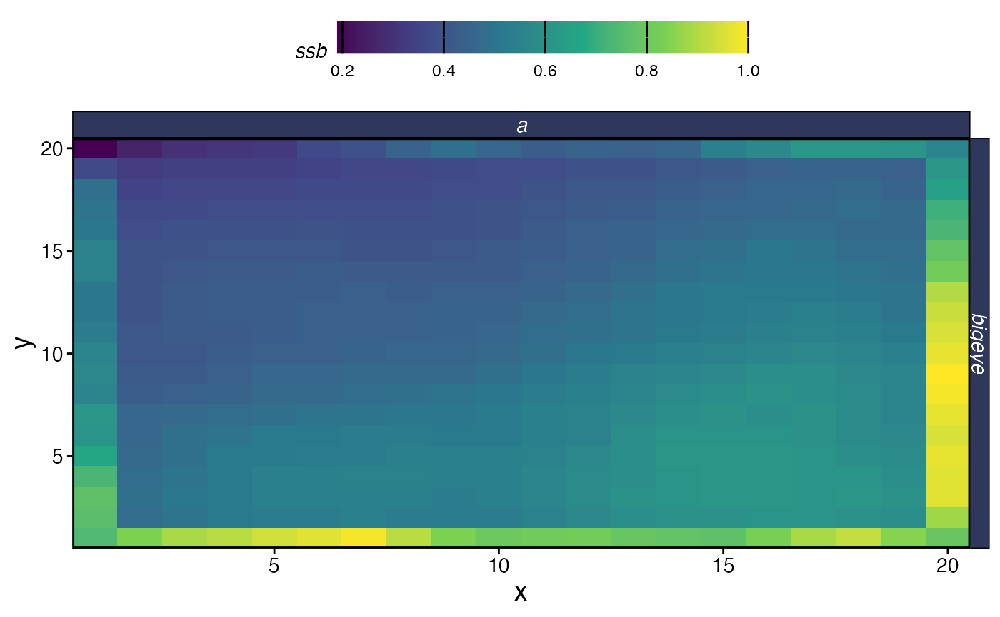
Spatial SSB at equilibrium
plot_marlin(proc_moat, plot_var = "c", plot_type = "space",
steps_to_plot = max(proc_moat$fauna$step))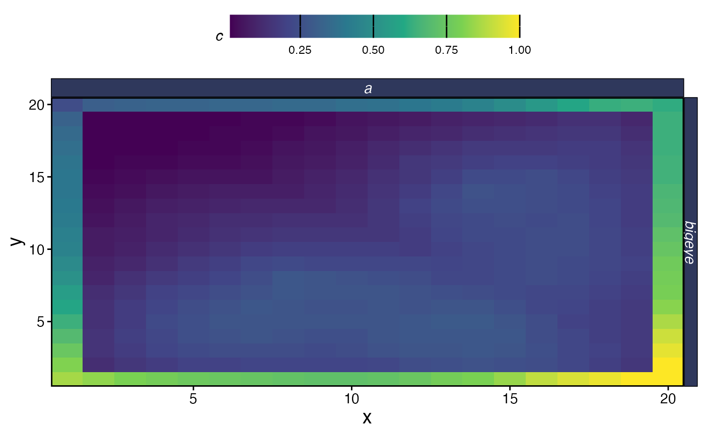
Spatial catch at equilibrium
Let’s look at effort allocation for each fleet. The high seas fleet is confined to the moat and distributes effort based on marginal profitability across those 76 patches. The island fleet is confined to the interior and additionally shaped by distance to its two ports.
fleet_summary <- proc_moat$fleets |>
filter(step == max(step)) |>
group_by(fleet, x, y) |>
summarise(
catch = sum(catch),
effort = sum(effort),
.groups = "drop"
) |>
mutate(cpue = catch / effort)
fleet_summary |>
group_by(fleet) |>
mutate(effort = effort / max(effort, na.rm = TRUE)) |>
ggplot(aes(x, y, fill = effort)) +
geom_tile() +
geom_point(data = ports |> mutate(fleet = "island"),
aes(x, y), color = "red", size = 2, shape = 17,
inherit.aes = FALSE) +
facet_wrap(~fleet) +
scale_fill_viridis_c() +
coord_equal() +
theme_minimal() +
labs(fill = "Effort")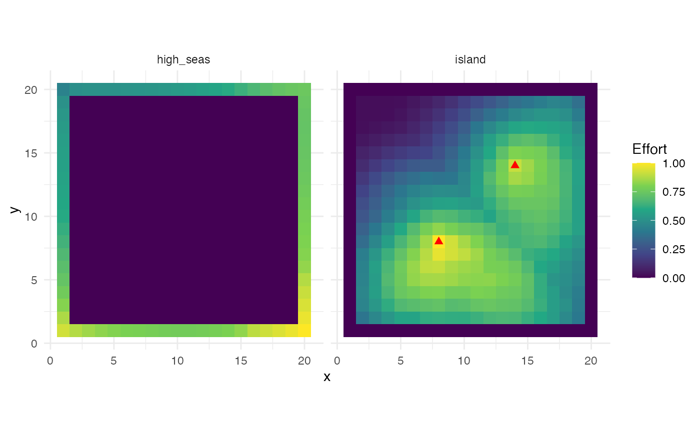
Effort distribution by fleet at equilibrium. Red triangles show island fleet ports.
The island fleet’s effort concentrates around its two ports, with
effort falling off with distance — a direct consequence of the
travel_fraction parameter. The high seas fleet, with no
travel costs, distributes effort more evenly across the moat, shaped
primarily by the underlying habitat quality and the marginal returns to
fishing.
We can also compare catch rates (CPUE) across fleets:
fleet_summary |>
filter(effort > 0) |>
ggplot(aes(x, y, fill = cpue)) +
geom_tile() +
facet_wrap(~fleet) +
scale_fill_viridis_c(option = "B") +
coord_equal() +
theme_minimal() +
labs(fill = "CPUE")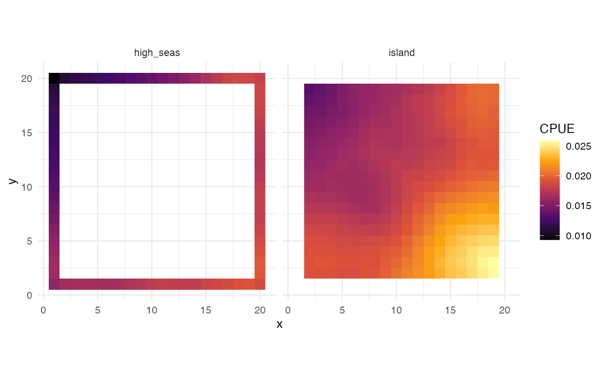
CPUE by fleet at equilibrium
Finally, let’s visualize the spatial pattern of depletion — SSB at the final time step relative to unfished SSB — to see how fishing pressure from the two fleets has shaped the population across the domain.
ssb_final <- proc_moat$fauna |>
filter(step == max(step)) |>
group_by(x, y) |>
summarise(ssb = sum(ssb), .groups = "drop")
ssb0_by_patch <- tibble(
ssb0 = fauna$bigeye$ssb0_p
) |>
bind_cols(expand_grid(x = 1:resolution[1], y = 1:resolution[2]))
depletion_map <- ssb_final |>
left_join(ssb0_by_patch, by = c("x", "y")) |>
mutate(depletion = ssb / ssb0)
depletion_map |>
left_join(patches |> select(x, y, is_moat), by = c("x", "y")) |>
ggplot(aes(x, y, fill = depletion)) +
geom_tile() +
geom_point(data = ports, aes(x, y), color = "red", size = 2, shape = 17,
inherit.aes = FALSE) +
scale_fill_viridis_c(option = "C", limits = c(0, 1)) +
coord_equal() +
theme_minimal() +
labs(fill = "SSB / SSB0",
title = "Spatial depletion under island chain / high seas scenario")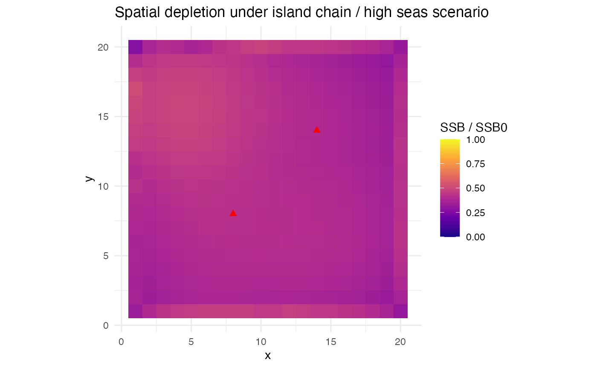
Spatial depletion (SSB/SSB0) at equilibrium. Interior patches are fished by the island fleet, moat patches by the high seas fleet.
This scenario illustrates several features of the flexible patch area
approach. The moat acts as a reservoir for the broader tuna population,
with tuna moving between the high seas and island waters. Because the
moat patches are so much larger, they hold most of the population
biomass even though they occupy only the perimeter of the grid. The two
fleets operate in completely separate spatial domains but are connected
through the movement of their shared target species: heavy fishing by
the island fleet can reduce the flow of tuna into the moat, and vice
versa. The marginal_profit allocation ensures that both
fleets respond to diminishing returns, while the island fleet’s
port-based cost structure creates additional spatial heterogeneity
within the interior.